Open to PhD positions
Ivan Pozdniakov
Researcher, R developer & statistics educator — moving from experimental neuroscience toward computational models of cognition.
A decade of asking how minds compute
I trained as a cognitive neuroscientist — brain stimulation and neuroimaging: TMS, tACS, EEG, MEG — and spent the last decade deliberately layering statistics, programming, and teaching on top of the experimental foundation.
That arc was intentional: from psychophysiology at Lomonosov MSU, through an MSc in Cognitive Sciences at HSE and years of stimulation research, to a visiting fellowship at the University of Potsdam — accumulating the empirical, statistical, and computational toolkit for the questions I care about. Now, based in Kiel, I'm looking for a PhD at the intersection of computation, cognition, and neural dynamics.
I teach statistics and R the way I wish they were taught to me — ten years of university courses, intensives, a free textbook, and a weekly live-coding stream. Beyond the lab: philosophy of mind, digital humanities, photography, and the occasional typeface.
statistics & R
articles
on CRAN
& counting

From stimulated cortex
to models of cognition
My experimental work probed the primary motor cortex with transcranial alternating current stimulation — asking when oscillatory entrainment does and does not outlast the stimulation itself. I was also one of the analyst teams in a landmark many-analysts project on how radically research outcomes depend on analytic choices.
These days I think about cognition computationally: neural dynamics, decision-making, and the statistical machinery that connects models to messy behavioral data.
All publications on Google Scholar-
2021
Online and offline effects of transcranial alternating current stimulation of the primary motor cortex Scientific Reports — first author
-
2021
Same data, different conclusions: radical dispersion in empirical results… Organizational Behavior and Human Decision Processes — one of 29 analyst teams
- 2019
-
2018
Transcranial electrical stimulation: possibilities and limitations The Russian Journal of Cognitive Science
Things I've built & shipped
Data Analysis & Statistics in R
Free, continuously updated Russian-language textbook — wrangling, visualization, statistics, and reproducible workflows with the tidyverse.
Read online ↗ Web app · 2026Æsthetics Ranking
Pairwise comparisons of visual aesthetics from the CARI archive — an adaptive top-5 algorithm, personal taste profiles, global rankings. Next.js, TypeScript, Supabase.
Try it live ↗ R package · CRAN{rdracor}
R client for the DraCor API — programmatic access to multilingual drama corpora: play texts, metadata, character networks.
CRAN ↗ Shiny appDraCor Shiny
Interactive exploration of drama corpora — character interaction networks, corpus statistics, text views.
Open app ↗ Live codingSunday ScReencast
Weekly unscripted live streams working through real datasets in R — wrangling, modeling, visualization, mistakes included.
Watch on YouTube ↗QuaziNote
A free typeface in two styles, drawn by hand and used right here on this card. Download and use freely.
Regular ↓ · Condensed ↓Tbilisi, February 2026
Shot on Fujifilm · drag or scroll sideways
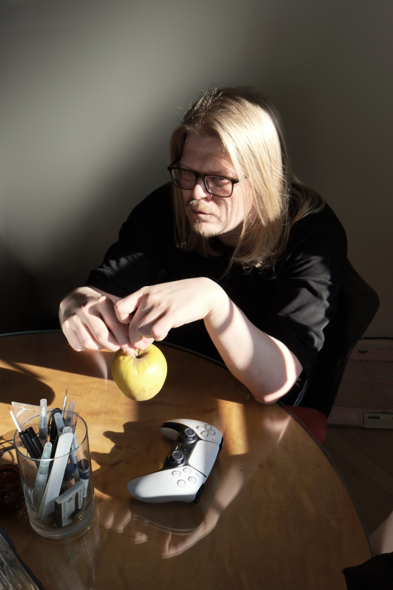
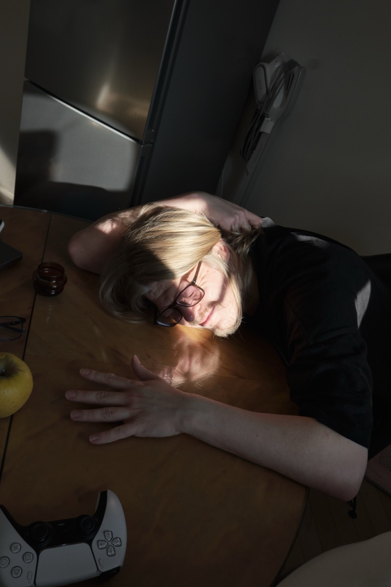
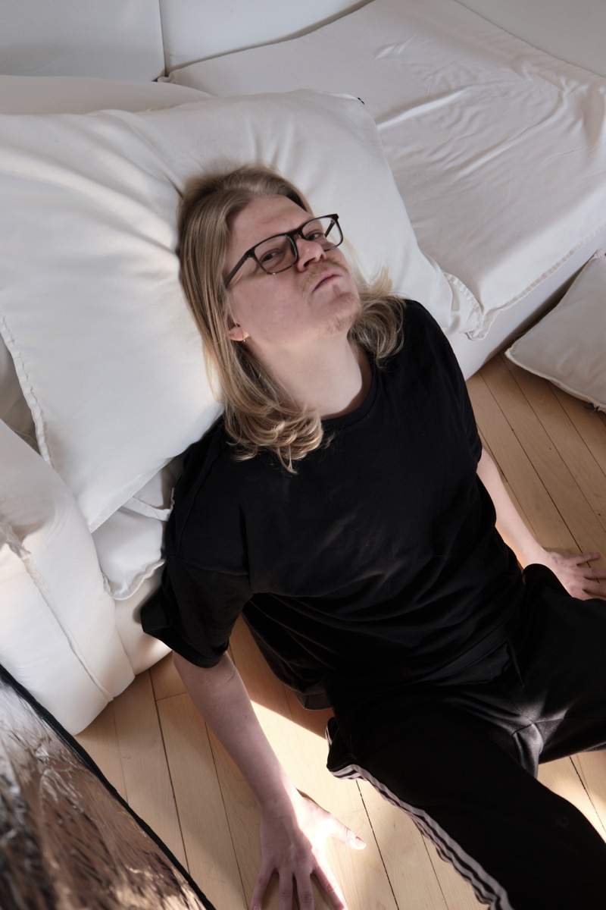
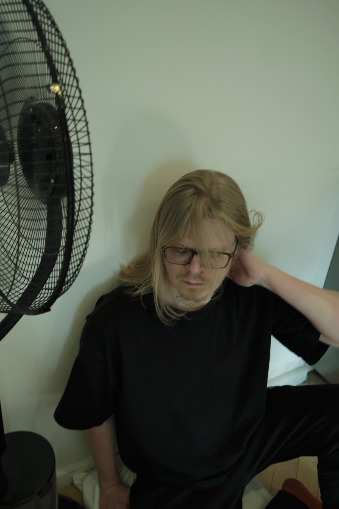
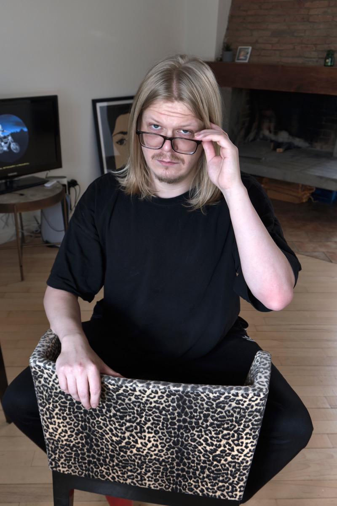
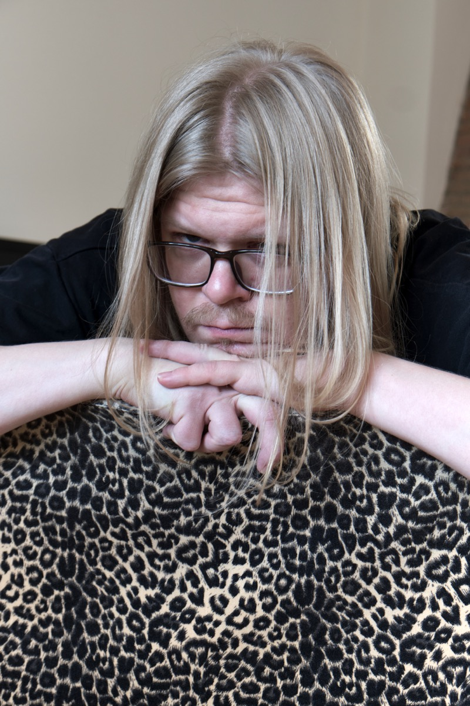
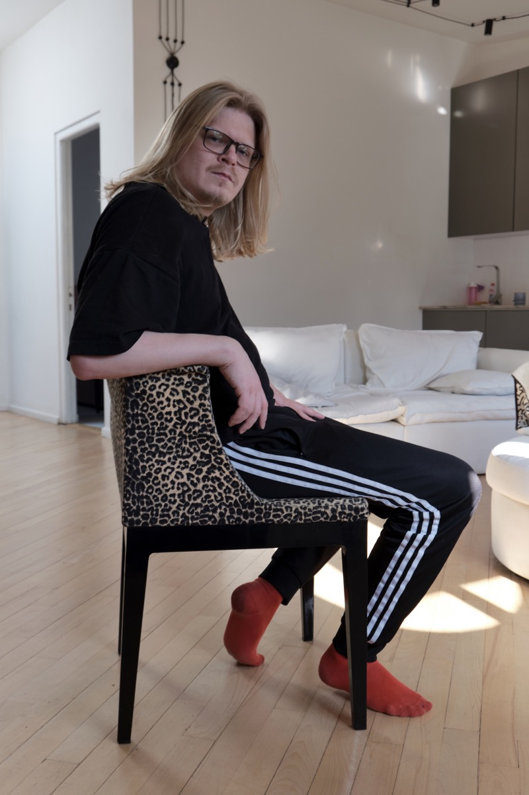
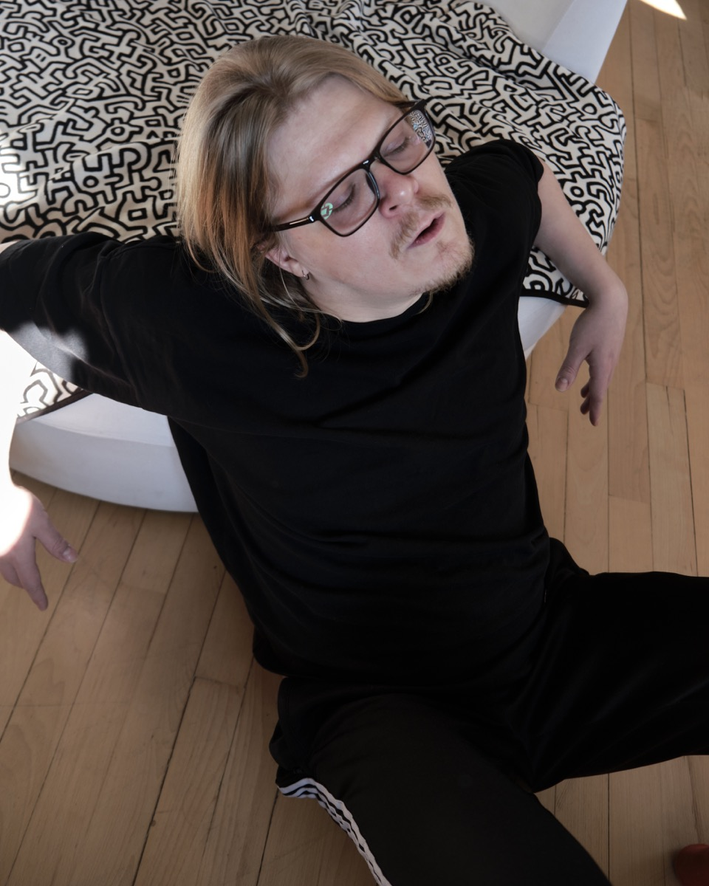
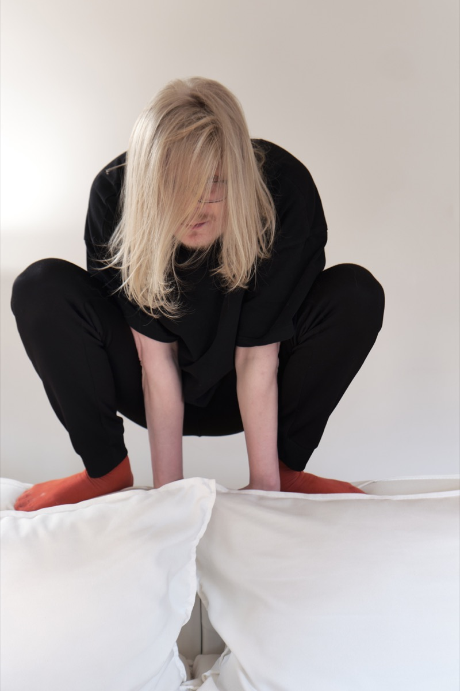
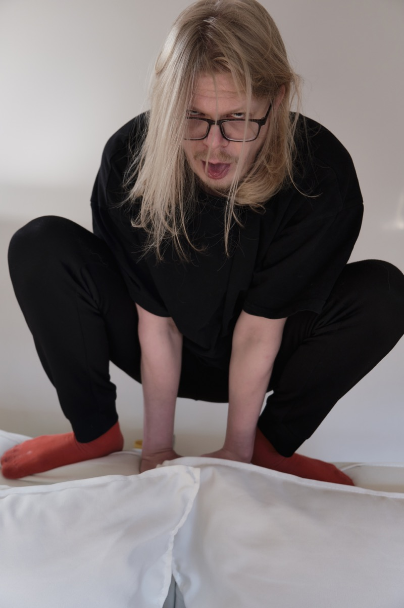
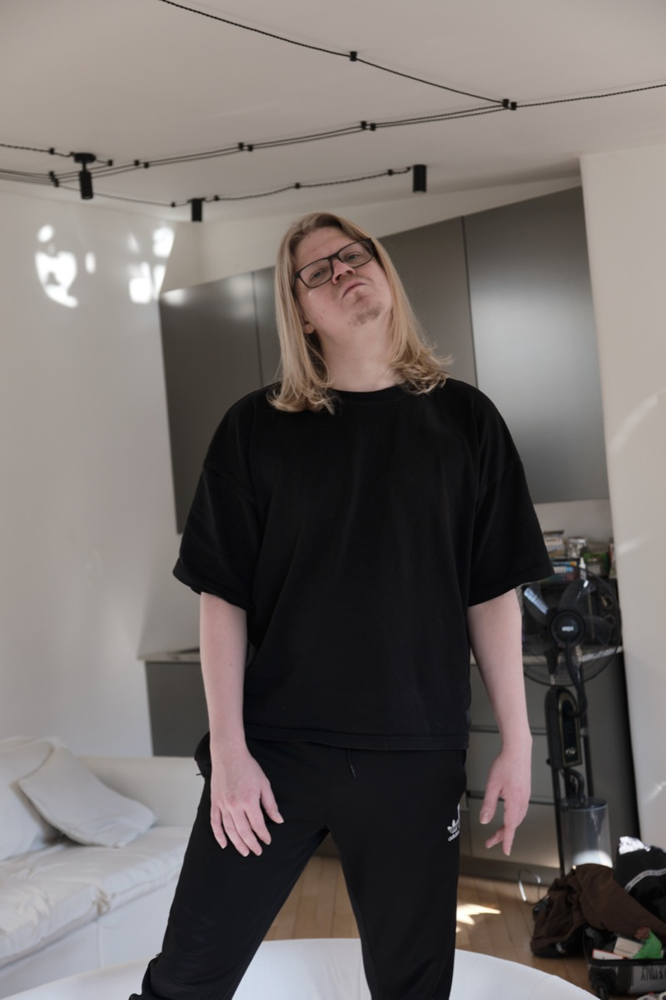
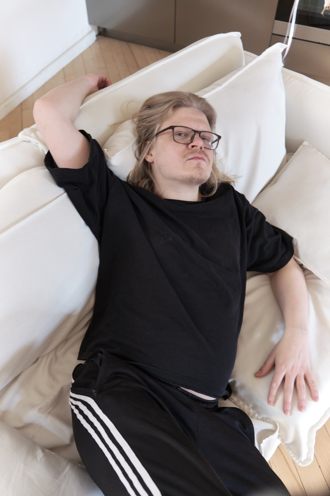
Let's talk.
PhD conversations, collaborations, teaching, or just an interesting question —
ivanspozdniakov@gmail.com